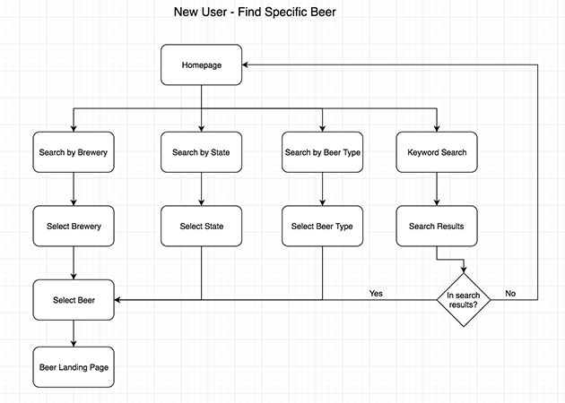
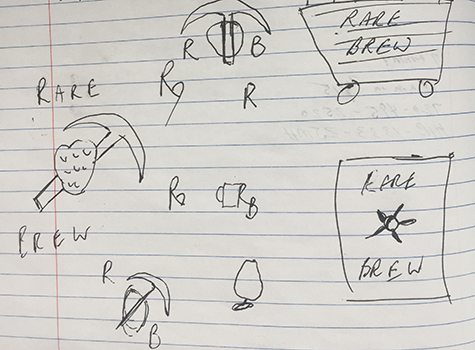
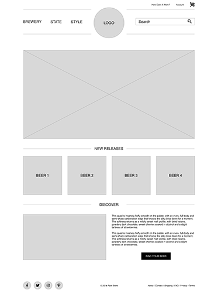
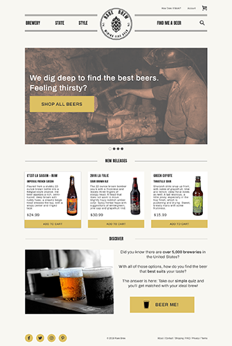

It’s safe to say Americans love beer. There are over 5,300 breweries across the country, with well over 300 in Colorado alone. With such a high concentration of new brews, finding the truly special beers can be a real challenge. My goal with Rare Brew was to create a website that modernized the beer buying process and helped connect beer lovers with rare and limited-release beers they love.
To ensure this was a website beer drinkers would use, I first conducted a survey to gauge interest. The results were positive, with 100% of respondents not only drinking beer, but also drinking craft beer. The demand for a site like Rare Brew was clear, with 70% of respondents saying they pursue rare or limited-release beers and would be interested in shopping for them online.
With a little research it’s easy to find plenty of websites that sell beer. However, after performing a competitive analysis with sites that ranked well for key search terms, there was a lot that could be improved on over what they were currently doing. Some of the key issues included:
Based on my competitive analysis and survey results, I was able to narrow the focus of this project to address the key issues facing other online beer sites. With Rare Brew I aimed to modernize the design, narrow the focus, simplify the checkout process and provide a way to rate and review products.
To inform my design and the flow of the site, I constructed a series of user stories focusing on both new and returning users to the site.
The user stories are a very helpful part of the design process, helping me think about how users might work their way through the site. From this information I moved to creating draw.io diagrams for the user flows.
In my research I found competing websites had an overly-complicated checkout process. To figure out how to improve upon this for Rare Brew, I also mapped their processes to see what could be eliminated for a more efficient user experience.
Knowing the key areas I intended to improve on and having their user flows constructed, I started to put together the brand identity. My goal was to create a logo more in line with what you would find in microbreweries. Additionally, I wanted to emphasize that the Rare Brew site was making a difficult process easier.
After sketching out some ideas by hand, I started to refine a logo design that looked like it would appear as a label on a beer bottle.
This project had very defined goals of areas I hoped to improve upon, so I constructed some wireframes in Sketch with the basic navigation layout that could be carried over across the site.
With the layout I wanted to use sitewide established, I moved quickly into the design. The objective was to test the improved checkout and rate and review process to get them into a prototype for user testing.
With all of the elements of the checkout and review process designed in Sketch, I created an InVision prototype and started gathering feedback.
The user input I received really helped me strengthen the design. Comments included:
“The navbar is way too big to be as minimal as it is.”
“I wasn’t sure what happened when I clicked the find me a beer area.”
Clearly the main navigation needed some improvement. I reduced the size of the logo and menu bar in order to give the rest of the content more real estate. Additionally, I implemented a super search bar that was significantly more attention grabbing when clicked.
The Rare Brew project really helped me refine my design process. These are some of the things I learned and how I will approach projects in the future.
The Rare Brew project is what helped me shape my design process. Structure is key for me, so going forward I will move through each element step-by-step before jumping into the full design. At the same time, I will continue to collect feedback as I work so those small adjustments can be made earlier in the process.
Brandon Farestad-Rittel
bfarestadrittel@gmail.com
Denver, CO